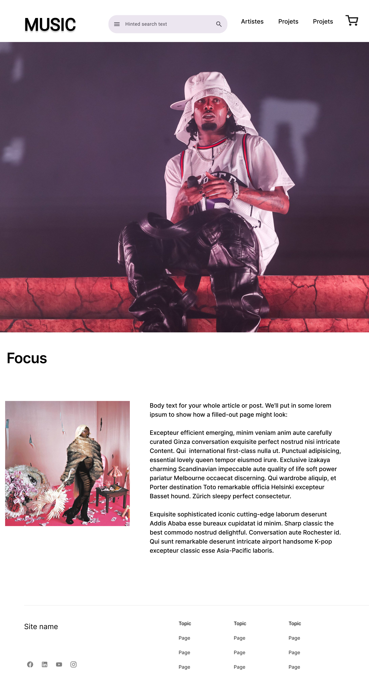
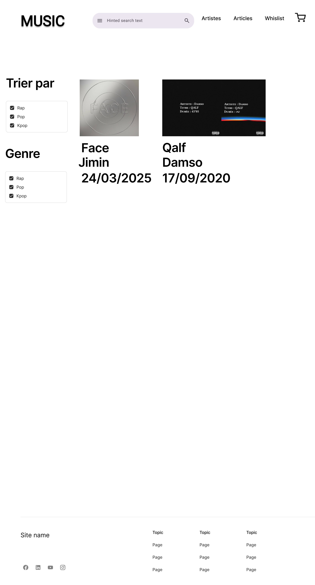
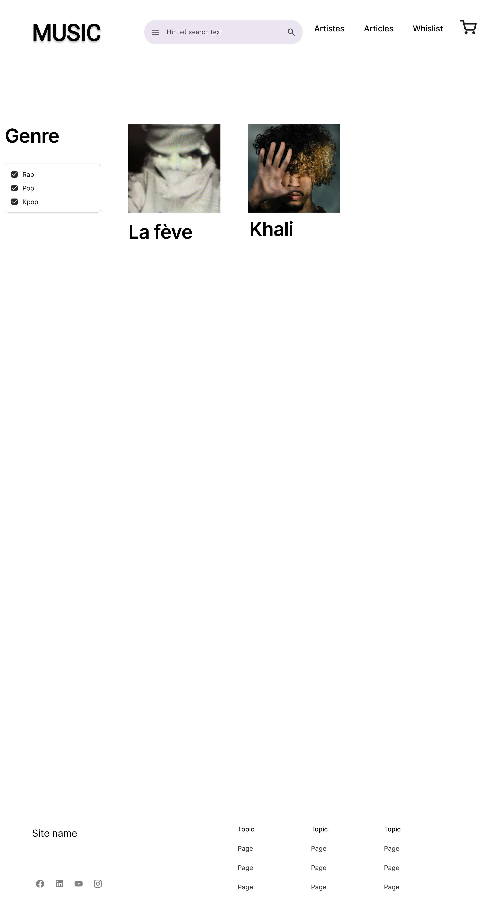
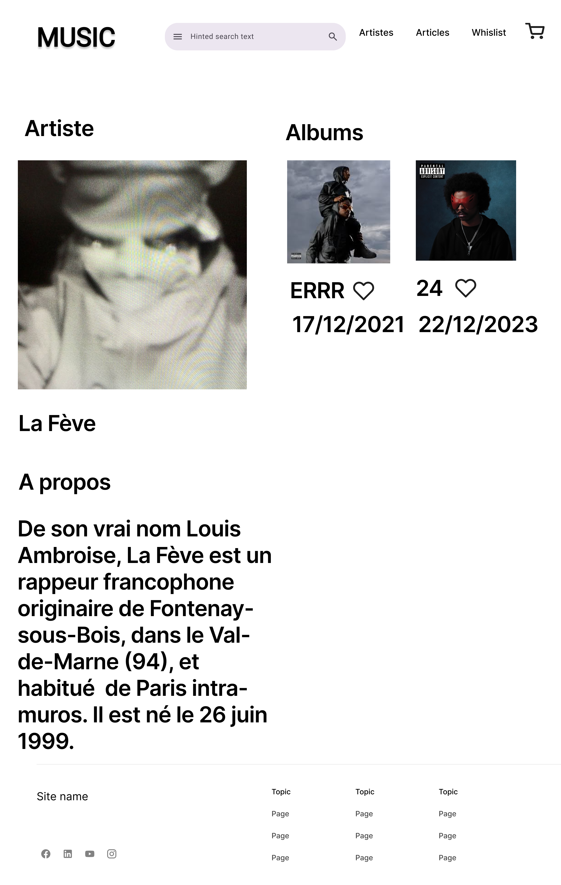
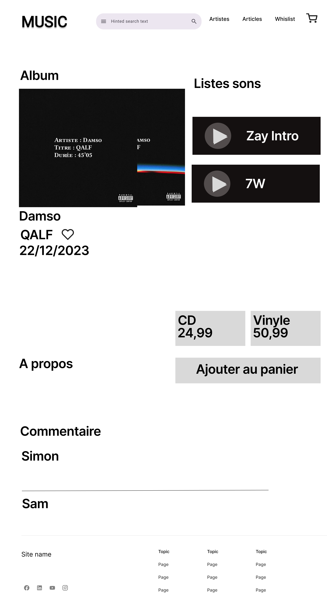
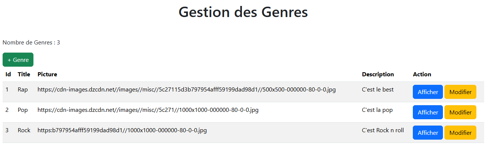
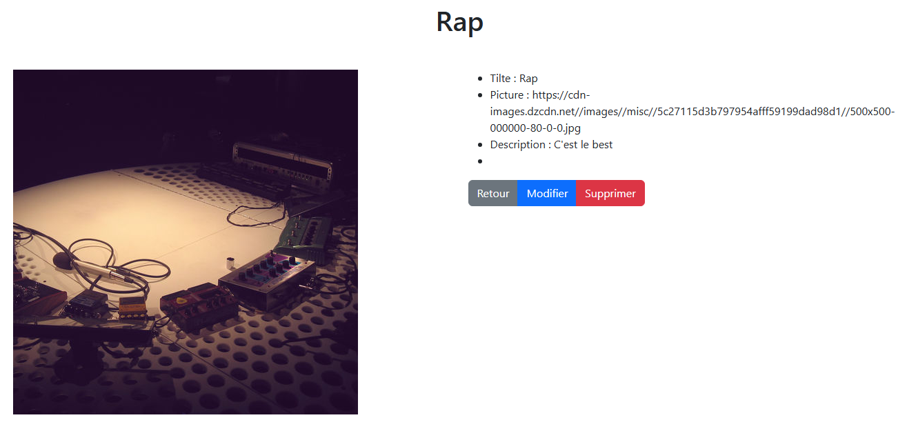

🎵 Projet : Music Ecom – Plateforme Hybride Discographique et E-Commerce
1. 📖 Présentation Générale
Le projet Music Ecom est une application web complexe conçue pour répondre à un double besoin : la gestion précise d'une base de données discographique (crédits musicaux détaillés) et l'exploitation d'une boutique en ligne de supports physiques (Vinyles, CD).
L'originalité du projet réside dans sa capacité à lier des entités techniques (beatmakers, ingénieurs du son) à des produits commerciaux, permettant une navigation transversale : l'utilisateur peut découvrir un album, consulter les crédits d'un morceau, puis acheter le vinyle correspondant.
2. 🏗️ Architecture Fonctionnelle
Le modèle de données s'articule autour de trois piliers majeurs :
A. 🎼 Le Noyau Musical (La "Discographie")
-
Personne & Role : Une gestion fine des intervenants. Au-delà de l'artiste principal, le système répertorie chaque contributeur (compositeur, mixeur, DA).
-
Track & Project : Gestion des morceaux et des albums. Le système supporte les relations complexes comme les rééditions, les versions Deluxe ou les Remixes via une classe de relation dédiée entre projets.
-
Lien Personne-Track-Role : C'est le cœur du système, permettant de dater et de typer précisément chaque collaboration.
B. 🛒 Le Pilier E-Commerce
-
Product : Fait le pont entre la musique et la vente. Un "Produit" est lié à un "Projet" musical.
-
Order & LigneCommande : Gestion classique du tunnel d'achat et du panier.
-
User : Gestion des profils (Clients et Administrateurs).
C. 🌐 La Dimension Communautaire
- Genre & Commentaire : Organisation par styles musicaux et système d'avis pour renforcer l'engagement des utilisateurs.
3. ⚙️ Réalisation Technique (Méthodologie Agile)
Le développement a été segmenté en 4 Sprints majeurs, utilisant les technologies Spring Boot (Kotlin), JPA/Hibernate et Thymeleaf.
🚀 Sprint 1 : Infrastructure et Socle MVC
Mise en place de l'environnement de développement sous IntelliJ IDEA. Configuration de la base de données MariaDB et structuration du projet selon le pattern MVC (Model-View-Controller). Création des premières routes statiques et intégration des fragments (Header/Footer).
🗄️ Sprint 2 : Persistance et Back Office
Transformation du diagramme de classes en entités JPA.
- Mise en place des DAO (Data Access Objects) via JpaRepository.
- Développement d'un DataInitializer pour automatiser le remplissage de la base de données lors des tests.
- Création d'un Back Office complet (CRUD) permettant aux administrateurs de gérer les artistes, les pistes et les stocks de produits.
🔐 Sprint 3 : Sécurité et Contrôle d'Accès
Intégration de Spring Security pour sécuriser l'application.
- Gestion de l'authentification par email/mot de passe (hashé via BCrypt).
- Mise en place de rôles (USER / ADMIN) avec restrictions d'accès sur les routes sensibles (Dashboard admin).
- Personnalisation de l'expérience utilisateur (affichage dynamique de la navbar selon l'état de connexion).
💻 Sprint 4 : Front Office et Expérience Utilisateur
Développement de l'interface publique.
- Navigation transverse : Possibilité de naviguer depuis un morceau vers la discographie complète d'un beatmaker.
- Fiches techniques : Affichage détaillé des crédits musicaux.
- Gestion du panier : Système de commande fonctionnel permettant l'achat de supports physiques.
4. 🧰 Stack Technique
- Langage : Kotlin / Java
- Framework : Spring Boot (Web, Data JPA, Security)
- Moteur de templates : Thymeleaf
- Base de données : MariaDB
- Outils : IntelliJ IDEA, Postman (tests d'API), Git.
5. 📊 Bilan du Projet
Ce projet m'a permis de maîtriser l'intégralité du cycle de vie d'une application web, de la modélisation conceptuelle à la mise en œuvre d'une interface utilisateur dynamique.
La gestion des relations "plusieurs-à-plusieurs" (Many-to-Many) entre les personnes, les rôles et les morceaux a représenté le défi technique le plus formateur, offrant une précision de données comparable aux plateformes professionnelles du secteur musical.







